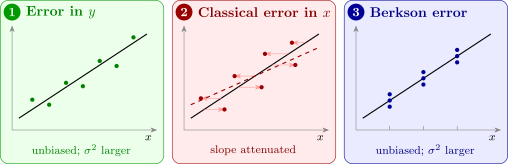

14.1 Errors in the variables
Suppose the true relationship is between \(y\) and a quantity \(\xi \) that cannot be observed exactly: \[ y_i = \beta _0 + \beta _1\xi _i + \varepsilon _i , \] and what is observed instead of \(\xi _i\) is \[ x_i = \xi _i + \delta _i , \] where the measurement error \(\delta _i\) has mean \(0\) and variance \(\sigma _\delta ^2\), and the \(\xi _i\), \(\delta _i\) and \(\varepsilon _i\) are all independent. This is the classical measurement error model. Errors in \(y\) alone cause no new difficulty: a measurement error in the response simply adds to \(\varepsilon \), increasing \(\sigma ^2\) but leaving least squares unbiased. Errors in \(x\) are different. Substituting \(\xi _i = x_i - \delta _i\), \[ y_i = \beta _0 + \beta _1x_i + (\varepsilon _i - \beta _1\delta _i) , \] so the error term now contains \(\delta _i\), which is also part of \(x_i\). The regressor and the error are correlated, \(\operatorname {Cov}(x_i, \varepsilon _i - \beta _1\delta _i) = -\beta _1\sigma _\delta ^2\), and one of the basic assumptions of least squares fails.
Theorem 14.1.1 (Attenuation). In the classical measurement error model, let the \(\xi _i\) be independent with variance \(\sigma _\xi ^2\). Then as \(n \to \infty \), the least-squares slope of \(y\) on the observed \(x\) converges in probability to \[ \lambda \beta _1 , \qquad \lambda = \frac {\sigma _\xi ^2}{\sigma _\xi ^2 + \sigma _\delta ^2} , \] the reliability ratio of the measurement \(x\). Since \(0 < \lambda < 1\), the slope is biased towards zero.
Proof. \(\hat \beta _1 = (S_{xy}/n)/(S_{xx}/n)\). By the law of large numbers, sample variances and covariances converge to the population values. The covariance of \(x = \xi + \delta \) and \(y = \beta _0 + \beta _1\xi + \varepsilon \) is \(\beta _1\operatorname {Var}(\xi ) = \beta _1\sigma _\xi ^2\), since \(\delta \) and \(\varepsilon \) are independent of everything else; and \(\operatorname {Var}(x) = \sigma _\xi ^2 + \sigma _\delta ^2\). So \(\hat \beta _1 \to \beta _1\sigma _\xi ^2/(\sigma _\xi ^2 + \sigma _\delta ^2)\). □
The effect is called attenuation: measurement error in \(x\) spreads the points horizontally and flattens the fitted line, as in Figure 30. A reliability of \(0.5\), common for single-day dietary measurements, halves the apparent effect. More data do not help: the estimate converges to the wrong value. The correlation between \(x\) and \(y\) is attenuated too, by the factor \(\sqrt \lambda \). With several regressors the picture is more complicated: the coefficient of a badly measured regressor is attenuated, and its lost effect can be picked up by the coefficients of other regressors correlated with it, which can then be biased in either direction.
Correcting for attenuation
If \(\sigma _\delta ^2\) is known, or can be estimated, the moments can be corrected: \[ \tilde \beta _1 = \frac {S_{xy}}{S_{xx} - (n - 1)\sigma _\delta ^2} , \qquad \tilde \beta _0 = \bar y - \tilde \beta _1\bar x . \] The denominator estimates \((n - 1)\sigma _\xi ^2\), so by the argument of Theorem 14.1.1 \(\tilde \beta _1 \to \beta _1\). The measurement error variance usually comes from replicate measurements: if each of \(r\) units is measured twice, the difference \(x_{i1} - x_{i2} = \delta _{i1} - \delta _{i2}\) has variance \(2\sigma _\delta ^2\), so half the sample variance of the differences estimates \(\sigma _\delta ^2\). The correction is unstable when \(S_{xx} - (n - 1)\sigma _\delta ^2\) is small, that is, when the measurement is very unreliable.
Example 14.1.2. In a study of \(100\) adults, systolic blood pressure \(y\) was regressed on salt intake \(x\) (g/day) estimated from a single 24-hour recall. The sample variance of \(x\) was \(9.0\) and the sample covariance of \(x\) and \(y\) was \(3.6\). A separate study in which \(40\) adults gave two recalls a week apart found that the sample variance of the differences between their two recalls was \(4.0\). Estimate the reliability of a single recall, and correct the slope.
Solution. The least-squares slope is \(3.6/9.0 = 0.40\) mm Hg per g/day. From the replicates, \(\hat \sigma _\delta ^2 = 4.0/2 = 2.0\). So \(\hat \sigma _\xi ^2 = 9.0 - 2.0 = 7.0\), and the reliability is \[ \hat \lambda = \frac {7.0}{9.0} = 0.78 . \] The corrected slope is \[ \tilde \beta _1 = \frac {3.6}{9.0 - 2.0} = 0.514 = \frac {0.40}{0.78} . \] The naive analysis understates the effect of salt by more than a fifth. (Dividing the sample sums by \(n - 1\) throughout gives the same result as the formula with \(S_{xx}\), \(S_{xy}\) and \((n - 1)\sigma _\delta ^2\).)
The Berkson model
Not every error in \(x\) causes bias. In a controlled experiment the experimenter often sets a nominal value \(x_i\), a dial setting or a target dose, and the true value achieved varies around it: \(\xi _i = x_i + \delta _i\), with \(\delta _i\) independent of the set value \(x_i\). This is the Berkson model. The error is now in the true value, not in the recorded one.
Theorem 14.1.3. In the Berkson model, with \(\delta _i\) independent of \(x_i\) and of \(\varepsilon _i\), least squares of \(y\) on the nominal \(x\) is unbiased for \(\beta _0\) and \(\beta _1\), and the error variance becomes \(\sigma ^2 + \beta _1^2\sigma _\delta ^2\).
Proof. \(y_i = \beta _0 + \beta _1(x_i + \delta _i) + \varepsilon _i = \beta _0 + \beta _1x_i + (\beta _1\delta _i + \varepsilon _i)\). The new error \(\beta _1\delta _i + \varepsilon _i\) has mean \(0\), variance \(\beta _1^2\sigma _\delta ^2 + \sigma ^2\), and is independent of \(x_i\), so this is an ordinary regression model with fixed \(x\), and Theorem 3.5.1 applies. □
The difference from the classical model is which quantity varies around which. In the classical model the recorded \(x\) is the truth plus noise, so \(x\) varies more than \(\xi \). In the Berkson model the truth is the recorded \(x\) plus noise, so \(\xi \) varies more than \(x\), and \(x\) is uncorrelated with the error.

When both variables have error: Deming regression
In comparing two measurement methods, or two instruments, neither variable is the “true” value: both are measured with error. Suppose \[ x_i = \xi _i + \delta _i , \qquad y_i = \beta _0 + \beta _1\xi _i + \varepsilon _i , \] with \(\operatorname {Var}(\delta _i) = \sigma _\delta ^2\) and \(\operatorname {Var}(\varepsilon _i) = \sigma _\varepsilon ^2\), and suppose the ratio \(\kappa = \sigma _\varepsilon ^2/\sigma _\delta ^2\) is known (for example from replicate measurements by each method). Treating the \(\xi _i\) as unknown constants, the natural criterion weights the horizontal and vertical errors by their variances and minimises \[ Q = \sum _{i=1}^n\Bigl [(x_i - \xi _i)^2 + \frac {(y_i - \beta _0 - \beta _1\xi _i)^2}{\kappa }\Bigr ] \] over \(\beta _0\), \(\beta _1\) and all the \(\xi _i\). Under normality this is maximum likelihood.
Theorem 14.1.4 (Deming regression). The minimum of \(Q\) is attained at \(\hat \beta _0 = \bar y - \hat \beta _1\bar x\) and \[ \hat \beta _1 = \frac {S_{yy} - \kappa S_{xx} + \sqrt {(S_{yy} - \kappa S_{xx})^2 + 4\kappa S_{xy}^2}}{2S_{xy}} . \] With \(\kappa = 1\) this is orthogonal regression, which minimises the sum of squared perpendicular distances from the points to the line.
Proof. For fixed \(\beta _0\), \(\beta _1\), each \(\xi _i\) appears in one term only. Write \(r_i = y_i - \beta _0 - \beta _1x_i\); with \(\xi _i = x_i - h\) the term is \(h^2 + (r_i + \beta _1h)^2/\kappa \), which is minimised at \(h = -\beta _1r_i/(\kappa + \beta _1^2)\), where it equals \(r_i^2/(\kappa + \beta _1^2)\) (substitute and simplify). So \[ \min _{\xi }Q = \frac {1}{\kappa + \beta _1^2}\sum _{i=1}^n(y_i - \beta _0 - \beta _1x_i)^2 . \] For fixed \(\beta _1\) this is minimised by \(\beta _0 = \bar y - \beta _1\bar x\), leaving \[ q(\beta _1) = \frac {S_{yy} - 2\beta _1S_{xy} + \beta _1^2S_{xx}}{\kappa + \beta _1^2} . \] Setting \(q'(\beta _1) = 0\), the numerator of the derivative is \((-2S_{xy} + 2\beta _1S_{xx})(\kappa + \beta _1^2) - 2\beta _1(S_{yy} - 2\beta _1S_{xy} + \beta _1^2S_{xx})\), which simplifies to \[ 2\bigl [S_{xy}\beta _1^2 + (\kappa S_{xx} - S_{yy})\beta _1 - \kappa S_{xy}\bigr ] . \] The quadratic \(S_{xy}\beta _1^2 + (\kappa S_{xx} - S_{yy})\beta _1 - \kappa S_{xy} = 0\) has roots of opposite signs (their product is \(-\kappa < 0\)), and the root with the sign of \(S_{xy}\), given by the formula, is the minimum; the other is a maximum of \(q\). With \(\kappa = 1\), the perpendicular distance from \((x_i, y_i)\) to the line is \(|r_i|/\sqrt {1 + \beta _1^2}\), so \(\min _{\xi }Q\) is the sum of squared perpendicular distances. □
As \(\kappa \to \infty \) (no error in \(x\)), \(\hat \beta _1 \to S_{xy}/S_{xx}\), the ordinary least-squares slope; as \(\kappa \to 0\) (no error in \(y\)), it tends to \(S_{yy}/S_{xy}\), the reciprocal of the slope of \(x\) on \(y\) (Problem 14.3.3). For \(S_{xy} > 0\) the Deming slope lies between these two.
Example 14.1.5. Eight blood samples were measured for glucose (mmol/l) by a laboratory analyser, \(x\), and a bedside meter, \(y\):
| \(x\) | 3.0 | 5.6 | 5.2 | 8.1 | 7.4 | 10.9 | 10.2 | 13.0 |
| \(y\) | 4.1 | 4.0 | 6.9 | 6.5 | 9.6 | 8.8 | 12.4 | 11.9 |
Replicate measurements suggest that the two methods are about equally precise. Is there evidence that the meter reads differently from the analyser?
Solution. Here \(\bar x = 7.925\), \(\bar y = 8.025\), \(S_{xx} = 77.175\), \(S_{yy} = 72.435\) and \(S_{xy} = 62.585\). The methods agree if \(\beta _0 = 0\) and \(\beta _1 = 1\).
Ordinary least squares of \(y\) on \(x\) gives slope \(62.585/77.175 = 0.811\) and intercept \(1.60\), suggesting that the meter reads high for low values and low for high ones. But the analyser’s readings have errors too, so this slope is attenuated.
Orthogonal regression (\(\kappa = 1\)): \(S_{yy} - S_{xx} = -4.740\), and \[ \hat \beta _1 = \frac {-4.740 + \sqrt {4.740^2 + 4(62.585)^2}}{2(62.585)} = \frac {-4.740 + 125.26}{125.17} = 0.963 , \] with \(\hat \beta _0 = 8.025 - 0.963(7.925) = 0.39\). The fitted line is close to \(y = x\). The slope of \(x\) on \(y\), inverted, gives \(S_{yy}/S_{xy} = 1.157\), and the Deming slope lies between the two least-squares slopes, as it must. The apparent disagreement suggested by ordinary least squares was an artefact of treating the analyser as exact.
Questions on this section
Stuck on something here? Ask below and it stays attached to this topic.